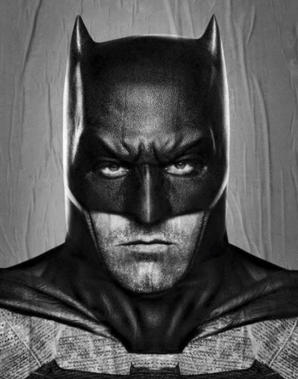

|  |
Currículo do Batman |
Também chamado de cavaleiro das trevas, estou sempre presente para combater o crime. Como Batman, sou um vigilante mascarado dedicado a proteger Gotham City contra o crime e a injustiça. Utilizando minhas habilidades de luta e inteligência aguçada, trabalho para manter a cidade segura, agindo como um guardião da justiça e um símbolo de esperança para os cidadãos de Gotham.
Cargo: CEO
Período: 1998 - Presente
Cargo: Vigilante
Período: 1999 - Presente